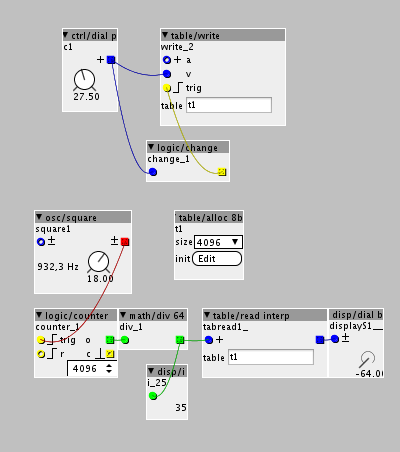

Hi,
Is there a way to make long variable delay (between 10 to 60s) for control data and trigger. The only delay object I see goes up to 3.91 seconds and cannot be modultated (except with the mouse).
Thanks
Long delay for control data
berzelius
#1
anon5189335
#2
You can make up to 43 seconds delay line in Axoloti.
Use object delay/write sdram NOT delay/write..... There is a lot more sdram in Axoloti than Sram.
A table/write sdram set to 2091752 is equivalant to 43,57816666666667 seconds
thats at audio rate (48k) , and control rate it could be much longer (or less memory).
im not sure if there are objects to do it, but you can do it yourself... its a simple matter of the distance between a read and write 'head' on a table. which you can use a simple counter to increment. (only corner case is making sure you loop around the table correctly)
berzelius
#4
I don't understand how to write in a table, the help is not very clear to me... I can only write on the first index. input +a and v what's the difference?
I tried this but does not work:

the +a is the index to position to write too.
this is in 'fractions of table size' so you need to calculate what this is per step
e.g. if you have a table size of 1024 , then its 1024/64 so you index with pos = (1024/64) * idx
really we could do with a new more features on tables to help this kind of processing,
in particular I think we should have.
i) alloc, should have an outlet with table size
ii) read/write with proper indexes
the later is not done as it can potentially lead to out of bounds issues, and also means if you change the table size you code needs to be careful to go with this. BUT... I think for advance use, its probably what you end up doing quite often.
thats said perhaps this kind of processing is best done in a custom object...
anon5189335
#6
Ahh yes, that is right 
I remember you mentioned this before, but I dont remember the usecase you presented? Curious here.
I am all for table updates. They are pretty good now, but always room for improvement Also have some ideas for updates, but dont remember them right now. As soon as I open a patch with table, I usually remember them.
An example of how to record to table can be found in the community. This method works, But you would probably need to make some adjustments to fit your needs. And read the thread carefully!